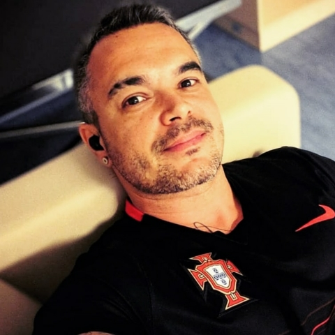

Marcelo Vianna Pacheco - CV Online
🇧🇷 PT
🇬🇧 EN

Marcelo Vianna Pacheco
Rio de Janeiro, Brasil
marcelovianna2010@gmail.com
+55 (22) 99877-5857
Resumo Profissional
Formação Acadêmica
Graduação Completa
Formação Técnica
Competências
Idiomas
Experiência Profissional